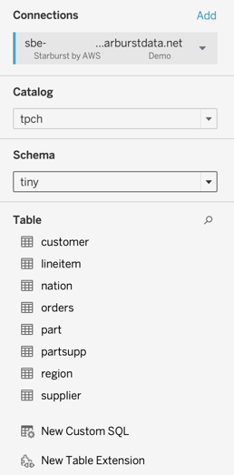
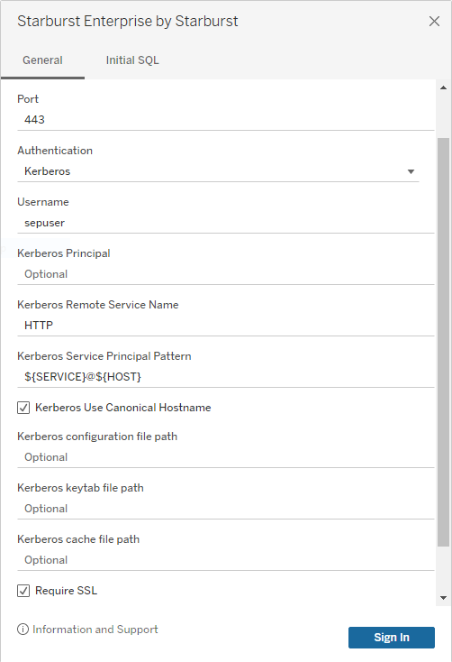
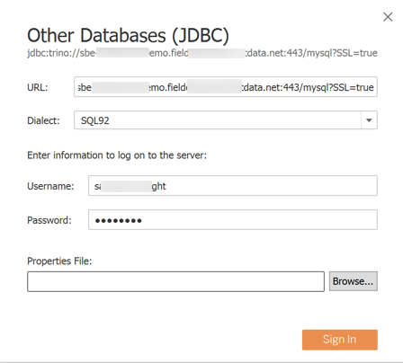

Tableau #
Tableau is a popular analytics tool with powerful data visualization capabilities. You can use it to access clusters in SEP or Starburst Galaxy.
There are three ways to connect recent releases of Tableau products to recent releases of a Starburst Enterprise platform (SEP) cluster:
-
Tableau data connector: The recommended connection method uses a Tableau data connector file paired with the Starburst JDBC driver.
-
Legacy JDBC connection: For sites using a plain JDBC connection using the legacy “Other Databases (JDBC)” method, Starburst strongly recommends migrating to the Tableau data connector method, but Starburst also supports continued use of the legacy method.
-
ODBC connection: Starburst also supports connecting to clusters with the Starburst ODBC driver.
Before you begin #
-
Determine the connection information for your cluster, including its network name, listening port (or default port), and login credentials.
-
Instructions to connect Tableau products to clusters vary slightly, depending on the SEP version. See Determine cluster version.
Tableau data connector with JDBC driver #
You can connect recent releases of Tableau Desktop to recent clusters with a combination of a Tableau data connector file and JDBC driver. This method requires:
- Starburst Galaxy or SEP 354-e or later
- Tableau Desktop 2020.4 or later
Note that a Tableau data connector is not the same as an SEP
connector. The Tableau data connector is a bridge between Tableau and the
standard Starburst JDBC driver. The two files work together to enable
read-only access between Tableau and one or more SEP or
Starburst Galaxy clusters. The Tableau data connector is a JAR file with name
similar to StarburstEnterprise.taco.
The procedure to install and use the Tableau data connector depends on your Tableau Desktop version:
-
For Tableau Desktop 2021.2.0 and later, select Starburst Enterprise directly from the To a Server menu and follow the standard data connector procedure.
-
For Tableau Desktop 2020.4 to 2021.1, you must first download the data connector file yourself, as described in download data connector.
Standard data connector procedure #
For Tableau Desktop 2021.2.0 or later, follow these steps:
-
If Tableau Desktop is open, close it and exit.
-
Download the latest Starburst JDBC driver.
-
Place the JDBC driver file in the Tableau drivers directory:
- Windows
- C:\Program Files\Tableau\Drivers
- macOS
- /Users/username/Library/Tableau/Drivers
Do not store more than one Starburst JDBC driver in this directory. Delete any older drivers when you update to a newer version. Connections to all connected data sources are made through the JDBC driver.
-
Start Tableau Desktop. In the left column, under To a Server, click More.
-
In the list of server types, select Starburst Enterprise by Starburst. This opens a Connector Details dialog that describes the data connector.
-
Click Install. This opens a connection dialog:

-
Fill in the connection dialog with the following parameters:
Field Value Server Hostname or IP address of your cluster. Port Port used by your cluster. Authentication Use the drop-down list to select among three options: Username for a cluster with no authentication, Username and Password for a cluster with TLS enabled and a password-based authentication method such as LDAP, or Kerberos. Username Your username for SEP or Starburst Galaxy. Password (If selected) the password for the specified Username. Require SSL Select this check box if your cluster has TLS enabled. When selected, the following field appears. SSL Verification Select an entry in the drop-down list to specify how rigorously the server’s certificate is to be validated. If you select Kerberos in the Authentication drop-down, see Kerberos authentication.
The values for SSL Verification have the following meanings:
- FULL
- Confirm that the certificate's validity is chained all the way back to a root Certificate Authority (CA).
- CA
- Confirm that the certificate is valid as far back as the included intermediate CA.
- NONE
- Confirm that the server's certificate matches the DNS name and private key of the server.
-
When the connection is made, the Connections panel shows a list of the catalogs (data sources) configured in your cluster.

-
Select a catalog and subsequent schema from that catalog, to see the available tables.

If your cluster and catalogs support it, you can use the Initial SQL panel to specify one or more SQL statements to run on connection to the cluster. See the Learn More link in Tableau for information on the limitations of this feature.
Kerberos authentication #
After selecting Kerberos in the Authentication drop-down, additional connection options appear in the Connection dialog.

The first four fields including Username are the same as described above. The Kerberos-specific fields are described in the following table:
| Field | Value |
|---|---|
| Kerberos Principal | The Kerberos principal to use when authenticating to the SEP coordinator. If not set, the value is read from the keytab file. |
| Kerberos Remote Service Name | SEP coordinator Kerberos service name. This parameter is required for Kerberos authentication. |
| Kerberos Service Principal Pattern | SEP coordinator Kerberos service principal pattern. The default is ${SERVICE}@${HOST}. ${SERVICE} is replaced with the value of Kerberos Remote Service Name and ${HOST} is replaced with the hostname of the coordinator (after canonicalization, if enabled). |
| Kerberos configuration file path | Local path to the Kerberos configuration file. |
| Kerberos keytab file path | Local path to the Kerberos keytab file. |
Use the same paths for the keytab and configuration file are used after publishing a SEP data source to Tableau Server. If they are not specified, default locations are used.
To troubleshoot Kerberos:
-
Set the
JAVA_TOOL_OPTIONSenvironment variable on the Tableau host to include:-Dsun.security.krb5.debug=true -Dtrino.client.debugKerberos=true \ -Djava.security.debug=gssloginconfig,configfile,configparser,logincontext -
Check the Tableau log files that have
jprotocolserverin their name, located in the\data\tabsvc\logs\dataserverdirectory on the Tableau server.
For further information on configuring and troubleshooting Kerberos on Tableau products, see:
- Kerberos
- Enable Kerberos Run As Authentication for JDBC Connectors
- Enable Kerberos Delegation for JDBC Connectors
- Troubleshoot Kerberos
Customized JDBC connections #
If you need to set additional connection properties that are not included in Tableau’s connection dialog, customize the connection using a properties file.
For more information, see Customize JDBC Connections Using a Properties File in the Tableau Community and the list of available parameters for the JDBC driver.
Starburst advantage #
Remember that Starburst Enterprise and Starburst Galaxy are not a database. They are SQL query engines that can connect to multiple data sources at the same time. Each cluster can query multiple catalogs in a wide range of different data sources.
Although Tableau is typically configured for one specific catalog and schema, it is possible to query more than one data source with a single Tableau connection.
To query multiple catalogs, select New Custom SQL in Tableau, and then
reference the fully-qualified name of any table in the cluster using the full
catalog.schema.table syntax.
The following example query accesses four catalogs: postgresql, hive,
mysql, and sqlserver.
SELECT c.custkey
, c.state
, c.estimated_income
, cp.customer_segment
, a.cc_number
, pp.cc_type
, a.mortgage_id
, a.auto_loan_id
FROM postgresql.burst_bank.customer c
JOIN hive.burst_bank.account a on c.custkey = a.custkey
JOIN mysql.burst_bank.product_profile pp on a.custkey = pp.custkey
JOIN sqlserver.burst_bank.customer_profile cp on c.custkey = cp.custkey
WHERE c.country = 'US'
AND c.state NOT IN ('AA', 'AE', 'AP')
This approach is faster because all data access is managed by SEP or Starburst Galaxy, and is executed on the cluster. Tableau can also join data directly from multiple data sources, but this creates an unnecessary workload on Tableau, and can negatively impact Tableau performance.
Download data connector #
For Tableau Desktop 2020.4 through 2021.1, the Tableau data connector for Starburst Enterprise does not appear automatically in the Additional Connectors list in the To a Server menu. To get Starburst Enterprise to appear in that list, either:
-
Upgrade Tableau Desktop to version 2021.2.0 or later, or
-
Prepare your Tableau installation as described here before attempting to connect to a cluster.
Follow these steps to manually download the Tableau data connector for Starburst Enterprise:
-
Close and exit Tableau Desktop.
-
From the Starburst Enterprise page of Tableau’s web-based Extension Gallery, download the Tableau data connector file whose name is similar to
StarburstEnterprise.taco. Use the Download button on the upper right of the page. This requires logging into Tableau’s site with a free login. -
Move the data connector file to:
- Windows
- C:\Users\username\Documents\My Tableau Repository\Connectors
- macOS
- /Users/username/Documents/My Tableau Repository/Connectors
-
Proceed from here to the standard data connector procedure.
Legacy JDBC driver connection #
Tableau provides a generic connection method titled Other Databases (JDBC). Although Starburst strongly recommends using a Tableau data connector, this generic JDBC connection method is still available. Follow these steps:
-
Download the Starburst JDBC driver according to your SEP version.
-
For Starburst Galaxy or SEP 354-e and later, download the latest JDBC driver version.
-
For SEP 350-e or older, download
presto-jdbc-350.jar.
-
-
Place the JDBC driver file in the Tableau drivers directory:
- Windows
- C:\Program Files\Tableau\Drivers
- macOS
- /Users/username/Library/Tableau/Drivers
Do not store more than one Starburst JDBC driver in this directory. Delete any older drivers when you update to a newer version. Connections to all connected data sources are made through the Starburst JDBC driver.
-
Start Tableau Desktop and select Connect to a server using the Other Databases (JDBC) connector in Tableau.
-
Fill in the connection dialog as shown in the following table. For the URL field, if you downloaded the Trino JDBC driver file to connect to Starburst Galaxy or newer SEP versions, use a JDBC connection string in this format:
jdbc:trino://cluster.example.com:8080/catalog?SSL=trueIf you downloaded the PrestoSQL JDBC driver file to connect to older SEP versions, use a JDBC connection string in this format:
jdbc:presto://cluster.example.com:8080/catalog?SSL=trueFor either driver, the JDBC connection string must include the initial catalog to connect to. Once connected, you can select schemas and tables within that catalog, or select a different catalog.
If your cluster has TLS enabled, append the property
?SSL=trueto the connection string.Field Value URL Full JDBC connection string for your cluster. Must include a catalog name. Dialect Must be ‘SQL92’ Username Your username Password Your password Properties File Specify or browse to the path of a JDBC properties file containing further specifications for this connection. See Customized JDBC Connections. 
ODBC driver connection #
Contact Starburst Support to obtain access to the Starburst ODBC driver. The Presto ODBC driver provided by Tableau is not supported.
Open Tableau and begin the ODBC configuration. On Tableau’s startup page, select Other Databases (ODBC), and configure as follows:
- Driver: Starburst ODBC Driver
- Username:
<username> - String Extras:
Driver=Starburst ODBC Driver;Catalog=<catalog>;Host=<host>;Port=<portDriver>;
The String Extras field supports any of the ODBC connection properties from
the Starburst ODBC driver.
Select Sign In to establish the connection. If you are prompted for a password, the SEP server has authentication enabled.
The Tableau ODBC documentation contains further information.
Is the information on this page helpful?
Yes
No